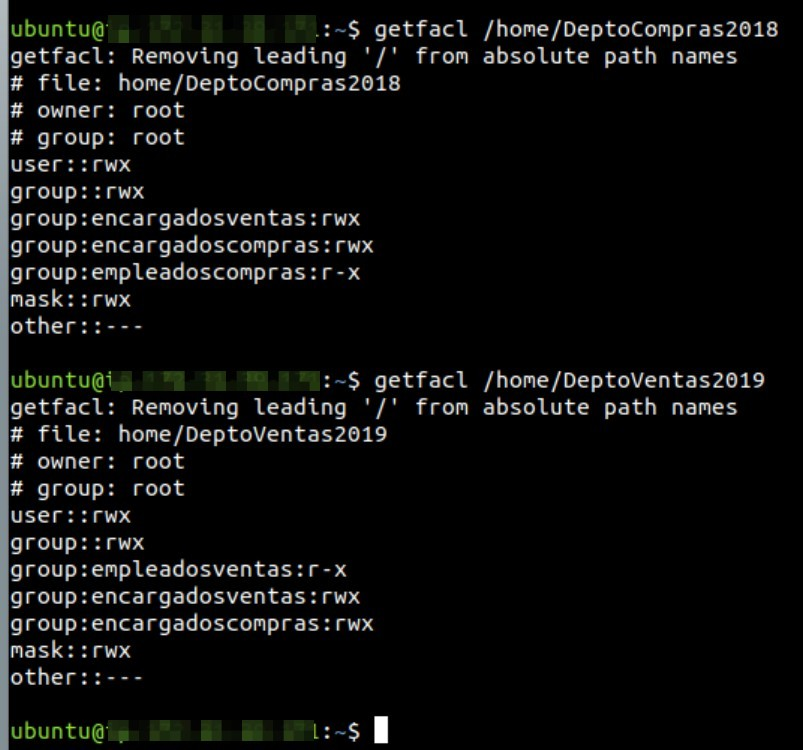
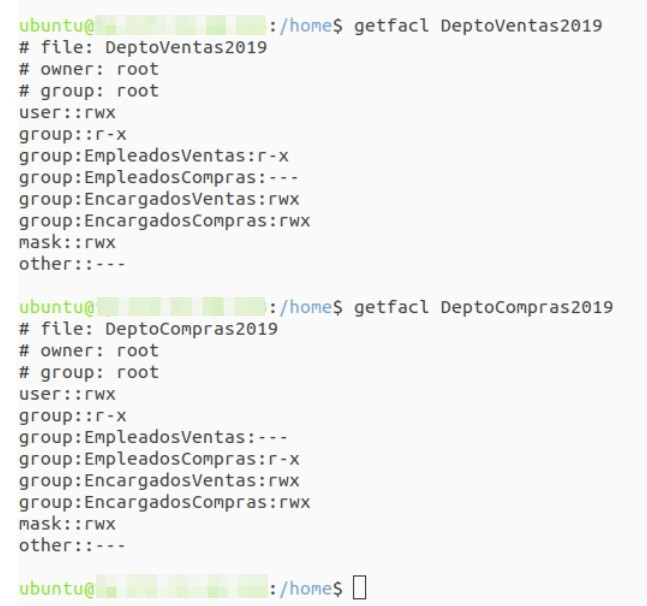

Práctica 4.2: Listas de Control de Acceso (ACLs POSIX) en GNU/Linux
Datos de la Práctica
- Módulo: Seguridad y Alta Disponibilidad (SAD - 0378)
- Unidad Didáctica: UD4 - Control de Accesos
- Requisitos: Sistema operativo Linux (Debian o Ubuntu Server en GNS3 o VirtualBox) con privilegios de superusuario (
sudo).
1. Objetivos
- Comprender de forma práctica las limitaciones del modelo de permisos tradicional UNIX (
UGO) frente a escenarios de colaboración departamental en entornos corporativos. - Verificar el soporte de Listas de Control de Acceso (ACLs) en los sistemas de ficheros de GNU/Linux e instalar las herramientas de gestión
acl. - Manejar con destreza las utilidades de línea de comandos
getfaclysetfaclpara consultar, asignar, modificar y revocar permisos granulares. - Diseñar e implantar una matriz de seguridad de accesos cruzados entre departamentos sobre múltiples usuarios y grupos nombrados.
- Configurar la herencia obligatoria de permisos en directorios compartidos mediante ACLs por defecto (
default:). - Comprender y comprobar el efecto limitador de la máscara (mask) sobre los permisos efectivos resultantes.
- Automatizar la exportación, clonación y migración de estructuras completas de ACLs mediante tuberías (pipes) para nuevos ejercicios anuales.
2. Escenario Departamental y Caso Práctico
Una empresa comercializadora necesita reorganizar la estructura de carpetas de almacenamiento local en su servidor principal GNU/Linux para dar cabida a los departamentos de Ventas y de Compras.
Se crearán dos carpetas principales en /home:
/home/DeptoVentas2025(con el archivo testigo inicial/home/DeptoVentas2025/Ventas2025.txt)/home/DeptoCompras2025(con el archivo testigo inicial/home/DeptoCompras2025/Compras2025.txt)
Ambas carpetas y ficheros pertenecerán inicialmente al usuario root:root.
Estructura de Cuentas y Grupos
Para gestionar el personal de la empresa, se desplegará la siguiente estructura de usuarios y grupos:
| Grupo | Usuarios miembros | Rol en la Organización |
|---|---|---|
EmpleadosVentas |
Sabiondo, Grunyon |
Personal operativo de ventas. |
EncargadosVentas |
Timido |
Responsable / supervisor del departamento de ventas. |
EmpleadosCompras |
Mudito, Dormilon |
Personal operativo de compras. |
EncargadosCompras |
Bonachon |
Responsable / supervisor del departamento de compras. |
Administradores |
TuNombreApellido (ej. jmunoz) |
Administrador global de sistemas y seguridad. |
(Nota: Evita utilizar tildes, eñes o caracteres especiales en los nombres de usuario y grupos para prevenir problemas de codificación en consola).
Matriz de Requerimientos de Seguridad
Debes implantar la siguiente directiva de accesos mediante ACLs:
1. Carpeta /home/DeptoVentas2025:
- Los miembros del grupo
EmpleadosVentaspodrán acceder a la carpeta y ver/leer su contenido (r-x). - Los miembros del grupo
EncargadosVentas, además de leer, podrán crear, modificar y borrar archivos en la carpeta (rwx). - El usuario administrador
TuNombreApellidotendrá control total absoluto sobre la carpeta y sus archivos (rwx). - El resto de usuarios del sistema (
other) no tendrán ningún tipo de acceso (---).
2. Carpeta /home/DeptoCompras2025:
- Los miembros del grupo
EmpleadosCompraspodrán acceder a la carpeta y ver/leer su contenido (r-x). - Los miembros del grupo
EncargadosCompras, además de leer, podrán crear, modificar y borrar archivos en la carpeta (rwx). - El usuario administrador
TuNombreApellidotendrá control total absoluto sobre la carpeta y sus archivos (rwx). - El resto de usuarios del sistema (
other) no tendrán ningún tipo de acceso (---).
3. Desarrollo Paso a Paso de la Práctica
Fase 1: Preparación del Entorno y Verificación Previa
Puedes realizar la práctica en una máquina virtual Debian o Ubuntu Server (en GNS3 conectada a una nube NAT, o en VirtualBox con red puente/NAT).
Vídeos Explicativos de Apoyo
Si deseas visualizar los pasos en vídeo antes o durante la realización de la práctica:
-
Inicia sesión en la máquina con tu usuario habitual con privilegios
sudo. -
Comprueba que el sistema de archivos de la partición
(En la salida debe figurar la opción/o/homesoporte ACLs:acl). -
Asegúrate de tener instalado el paquete de utilidades de administración de ACLs:
-
Comprueba que dispones de los comandos
getfaclysetfacl:
Fase 2: Creación de Grupos, Usuarios y Carpetas Base
1. Creación de Grupos Departamentales:
Ejecuta los siguientes comandos para crear los grupos corporativos:
sudo groupadd EmpleadosVentas
sudo groupadd EncargadosVentas
sudo groupadd EmpleadosCompras
sudo groupadd EncargadosCompras
sudo groupadd Administradores
2. Creación de Usuarios y Asignación de Pertenencia:
Crea las cuentas de usuario indicando su directorio personal e incorporándolos a sus respectivos grupos principales o secundarios:
# Personal de Ventas:
sudo useradd -m -s /bin/bash -g EmpleadosVentas Sabiondo
sudo useradd -m -s /bin/bash -g EmpleadosVentas Grunyon
sudo useradd -m -s /bin/bash -g EncargadosVentas Timido
# Personal de Compras:
sudo useradd -m -s /bin/bash -g EmpleadosCompras Mudito
sudo useradd -m -s /bin/bash -g EmpleadosCompras Dormilon
sudo useradd -m -s /bin/bash -g EncargadosCompras Bonachon
# Administrador (sustituye por tu nombre y primer apellido real, ej. jmunoz):
# Si ya estás trabajando con tu propio usuario en la máquina, puedes agregarlo al grupo:
sudo usermod -aG Administradores $USER
Asigna una contraseña sencilla a los usuarios de prueba para poder validar el cambio de sesión más adelante:
for u in Sabiondo Grunyon Timido Mudito Dormilon Bonachon; do
echo "$u:sad1234" | sudo chpasswd
done
3. Creación de Carpetas y Ficheros Testigo:
Crea las carpetas departamentales en /home y sus archivos iniciales con el usuario root:
sudo mkdir /home/DeptoVentas2025
sudo mkdir /home/DeptoCompras2025
sudo touch /home/DeptoVentas2025/Ventas2025.txt
sudo touch /home/DeptoCompras2025/Compras2025.txt
# Asegurar que el propietario inicial sea root:root
sudo chown -R root:root /home/DeptoVentas2025 /home/DeptoCompras2025
Fase 3: Asignación de Permisos Granulares con setfacl
Configuraremos las ACLs para cumplir estrictamente con los requerimientos de seguridad.
1. Configuración de la Carpeta de Ventas:
# 1. Denegar cualquier acceso al resto de usuarios del sistema:
sudo setfacl -m o::--- /home/DeptoVentas2025
# 2. Conceder lectura y navegación a los Empleados de Ventas:
sudo setfacl -m g:EmpleadosVentas:rx /home/DeptoVentas2025
# 3. Conceder control completo a los Encargados de Ventas:
sudo setfacl -m g:EncargadosVentas:rwx /home/DeptoVentas2025
# 4. Conceder control total al Administrador (TuNombreApellido):
sudo setfacl -m u:$USER:rwx /home/DeptoVentas2025
Aplica también los permisos correspondientes sobre el archivo testigo existente Ventas2025.txt:
sudo setfacl -m g:EmpleadosVentas:r--,g:EncargadosVentas:rw-,u:$USER:rw-,o::--- /home/DeptoVentas2025/Ventas2025.txt
2. Configuración de la Carpeta de Compras:
Aplica la directiva equivalente para el departamento de compras:
sudo setfacl -m o::--- /home/DeptoCompras2025
sudo setfacl -m g:EmpleadosCompras:rx /home/DeptoCompras2025
sudo setfacl -m g:EncargadosCompras:rwx /home/DeptoCompras2025
sudo setfacl -m u:$USER:rwx /home/DeptoCompras2025
sudo setfacl -m g:EmpleadosCompras:r--,g:EncargadosCompras:rw-,u:$USER:rw-,o::--- /home/DeptoCompras2025/Compras2025.txt
3. Inspección con getfacl:
Comprueba la lista de acceso resultante en ambas carpetas:
Observa también el listado largo del directorio /home:
+) al final de los permisos en ambas carpetas).
Fase 4: Configuración de la Herencia de Permisos (default:)
Si un encargado crea un archivo nuevo dentro de /home/DeptoVentas2025, por defecto ese archivo se creará con la umask personal del usuario, impidiendo que otros compañeros puedan acceder según la política del departamento.
Para solucionar esto, definiremos ACLs por defecto en ambas carpetas:
# Reglas por defecto para DeptoVentas2025:
sudo setfacl -d -m g:EmpleadosVentas:rx,g:EncargadosVentas:rwx,u:$USER:rwx,o::--- /home/DeptoVentas2025
# Reglas por defecto para DeptoCompras2025:
sudo setfacl -d -m g:EmpleadosCompras:rx,g:EncargadosCompras:rwx,u:$USER:rwx,o::--- /home/DeptoCompras2025
Verifica con getfacl /home/DeptoVentas2025 que ahora se muestran las entradas que comienzan por default:.
Fase 5: Pruebas de Acceso Efectivo
Realizaremos comprobaciones reales cambiando de identidad con su - (o ejecutando comandos mediante sudo -u):
1. Pruebas con el usuario Sabiondo (Empleado de Ventas):
# Listar la carpeta de ventas (debe permitirlo):
sudo -u Sabiondo ls -l /home/DeptoVentas2025
# Leer el archivo de ventas (debe permitirlo):
sudo -u Sabiondo cat /home/DeptoVentas2025/Ventas2025.txt
# Intentar crear un archivo en ventas (DEBE DENEGARLO):
sudo -u Sabiondo touch /home/DeptoVentas2025/nuevo_sabiondo.txt
# Salida esperada: touch: cannot touch '/home/DeptoVentas2025/nuevo_sabiondo.txt': Permission denied
# Intentar acceder a compras (DEBE DENEGARLO):
sudo -u Sabiondo ls /home/DeptoCompras2025
# Salida esperada: ls: cannot open directory '/home/DeptoCompras2025': Permission denied
2. Pruebas con el usuario Timido (Encargado de Ventas):
# Crear un archivo nuevo en ventas (debe permitirlo):
sudo -u Timido touch /home/DeptoVentas2025/informe_timido.txt
# Comprobar que el archivo recién creado ha heredado las ACLs por defecto:
getfacl /home/DeptoVentas2025/informe_timido.txt
3. Pruebas con el usuario Mudito (Empleado de Compras):
# Comprobar que no puede acceder a ventas:
sudo -u Mudito ls /home/DeptoVentas2025
# Salida esperada: Permission denied
# Comprobar que puede leer en compras:
sudo -u Mudito ls -l /home/DeptoCompras2025
Fase 6: Automatización de la Clonación de ACLs para el Nuevo Ejercicio Anual
Al llegar el nuevo año, el usuario root necesita preparar las carpetas del siguiente ejercicio fiscal:
/home/DeptoVentas2026/home/DeptoCompras2026- Archivos
Ventas2026.txtyCompras2026.txt
En lugar de reescribir manualmente cada regla setfacl, utilizaremos la potencia de las tuberías de Linux para extraer las ACLs completas de 2025 y aplicarlas de forma automática a las carpetas de 2026.
-
Crea las nuevas carpetas y ficheros base con
root: -
Clona las ACLs de forma automática mediante tubería:
(La opción# Clonar ACLs de Ventas (incluyendo permisos de acceso y de herencia): sudo getfacl -p -R /home/DeptoVentas2025 | sudo setfacl -b -R -M - /home/DeptoVentas2026 # Clonar ACLs de Compras: sudo getfacl -p -R /home/DeptoCompras2025 | sudo setfacl -b -R -M - /home/DeptoCompras2026-ppreserva los nombres absolutos sin avisos informativos,-blimpia permisos residuales en destino y-M -lee las especificaciones directamente desde la tubería). -
Verificación final con
getfacl: Ejecutagetfaclsobre las carpetas de 2026 y confirma que los permisos son idénticos a los del año anterior:
4. Referencia de Salidas Esperadas
A continuación puedes consultar dos ejemplos de ejecución real de getfacl que ilustran la estructura exacta de permisos tras configurar las directivas departamentales:


5. Entregables y Memoria de Prácticas
Elabora una memoria en formato PDF con tu nombre completo que incluya las siguientes evidencias:
- Captura 1: Comandos utilizados para crear los usuarios y grupos departamentales.
- Captura 2: Comandos de
setfaclutilizados para aplicar las directivas de acceso y las reglas de herencia por defecto en/home/DeptoVentas2025y/home/DeptoCompras2025. - Captura 3: Salida del comando
getfaclsobre/home/DeptoVentas2025y/home/DeptoCompras2025. -
Captura 4: Pruebas de acceso demostrando:
-
Acceso concedido de
Sabiondoa ventas y denegación al intentar escribir. - Denegación de acceso de
Sabiondoa compras. -
Creación exitosa de un archivo por
Timidoy salida degetfaclsobre dicho archivo mostrando la herencia. -
Captura 5: Comandos utilizados para trasladar automáticamente las ACLs de las carpetas de 2025 a las de 2026.
- Captura 6: Salida de
getfaclsobre cada una de las carpetas de 2026 y listado largols -ld /home/Depto*donde se visualicen los propietarios y el indicador+de ACL extendida.
6. Cuestiones de Autoevaluación
Responde de forma fundamentada a las siguientes preguntas en tu documento:
- ¿Por qué el modelo tradicional UGO no permitía resolver los requerimientos planteados para los departamentos de Ventas y Compras sin comprometer la seguridad?
- Si aplicamos la regla
g:EncargadosVentas:rwxa una carpeta, pero la máscara de la ACL tiene el valorm::rx, ¿qué permiso real o efectivo tendrán los miembros de ese grupo? Justifica tu respuesta citando la fórmula matemática de evaluación. - ¿Cuál es la diferencia entre un permiso de acceso ordinario asignado a un directorio y un permiso por defecto (
default:)? ¿Qué ocurre si un usuario crea un subdirectorio dentro de una carpeta con permisos por defecto? - Si un usuario concreto tiene una entrada en la ACL con
u:sabiondo:---, pero pertenece al grupog:EmpleadosVentas:r-x, ¿podrá acceder al archivo? Explica qué regla del algoritmo de evaluación del kernel de Linux determina el resultado.